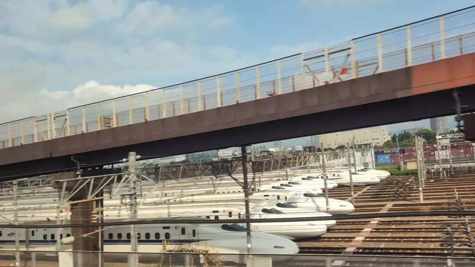
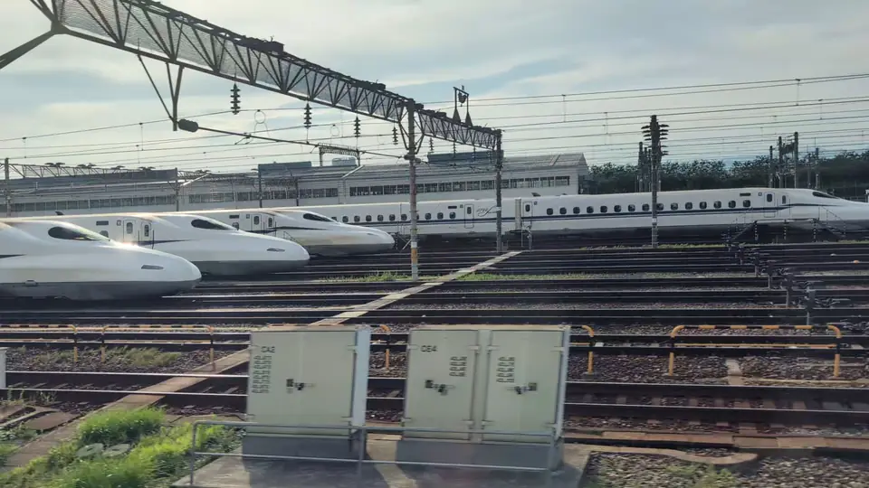

- Section
- Kyoto → Shin-Osaka
- Seat side
- Seat E · mountain side
- Timing
- About 141 minutes after leaving Tokyo on a Nozomi train
- Photos
- 4 photos
What is Torikai Rail Yard?
Torikai Rail Yard is a large JR Central rolling-stock depot in Torikai-nishi, Settsu City, Osaka Prefecture, running alongside the Tokaido Shinkansen. It opened on October 1, 1964 — the very day the Tokaido Shinkansen entered service — and has since supported Tokaido / Sanyo operations from the Osaka side. The site covers about 280,000 square meters, with parking, inspection and washing tracks spreading over a wide area. Dozens of N700A, N700S and formerly 700-series trains can stand here at once. It is particularly full overnight, and effectively provides the answer to a core question of the Shinkansen timetable: 'which trains are available to depart from where at first light tomorrow.'
More: JR Central: Maintenance at Torikai Train Depot (Japanese only)Wikipedia: Torikai Rail Yard (Japanese only)
If you are traveling from Tokyo toward Shin-Osaka, start watching the Seat E · mountain side window as you approach Kyoto → Shin-Osaka. If you are traveling toward Tokyo, the order is reversed.
What actually happens inside
Trains here undergo a graded set of inspections. Between short-term operations, quick 'shigyo' inspections check exterior and mechanical condition, listening for irregular noises. Every few days to weeks, more thorough 'kōban' inspections take place inside the depot buildings. On top of these, interior cleaning, pantograph and bogie checks, and washing of the exterior all happen here and prepare each train for the next run.
The site holds long roofed inspection sheds, elevated platforms for pantograph work, large train-wash facilities, and long yard tracks fanning out into a wide grid. Torikai is the largest Shinkansen depot on the Tokaido / Sanyo network. Together with Oi Rail Yard in Tokyo, it forms the eastern and western anchor of the fleet-management system that keeps the Tokaido Shinkansen running.
The depot itself is generally not open for public tours, but nearby parks such as Ama-Yato-iseki Park in Settsu City offer good vantage points to watch Shinkansen pass in front of the tracks. From the train, the slowing speed here means you have several tens of seconds to enjoy this backstage view — take your time.
Location at a glance
Open mapSwitch between the spot and the Shinkansen viewpoint.
How to catch Torikai Train Depot
1. Choose the window first
As you approach Kyoto → Shin-Osaka, start watching from Seat E · mountain side. Use Live Guide while riding, or the map on this page before you board.
The view lasts around 10 seconds. Choose the seat side and window direction early so you can follow it from the start.
2. Highlights
After Kyoto, as the train starts to slow before Shin-Osaka, watch the Seat E window closely. Rows of white Shinkansen fan out across the yard, followed by long inspection sheds, train-wash bays and tall pantograph inspection platforms. At night, illuminated tracks and quietly resting Shinkansen turn the whole scene into a hushed, almost dreamlike view.
Torikai Train Depot in photos


 Related
Seta no Karahashi Bridge
Related
Seta no Karahashi Bridge
 Related
Kannonji Castle Ruins
Related
Kannonji Castle Ruins
 Related
Sawayama Castle Ruins
Related
Sawayama Castle Ruins